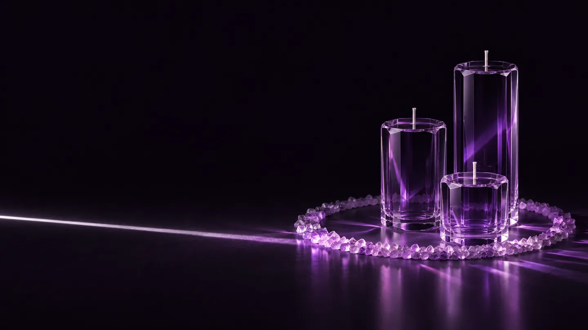
Minecraft mod
We turned seasons 1–5 of Supernatural into a Minecraft mod with its own rules. Not an item pack: a hunter loop, an apocalypse, three extra dimensions, a 1:1 Kansas, twelve firearms and a story with an ending.
This is a fan-made mod by fans of the series. The showcase repository holds only screenshots and feature descriptions; the source code is not published.
Shader: off, balanced.
The mod has its own shader. It needs no Iris or OptiFine; it ships inside the jar. Drag the bar: same frame, two profiles.
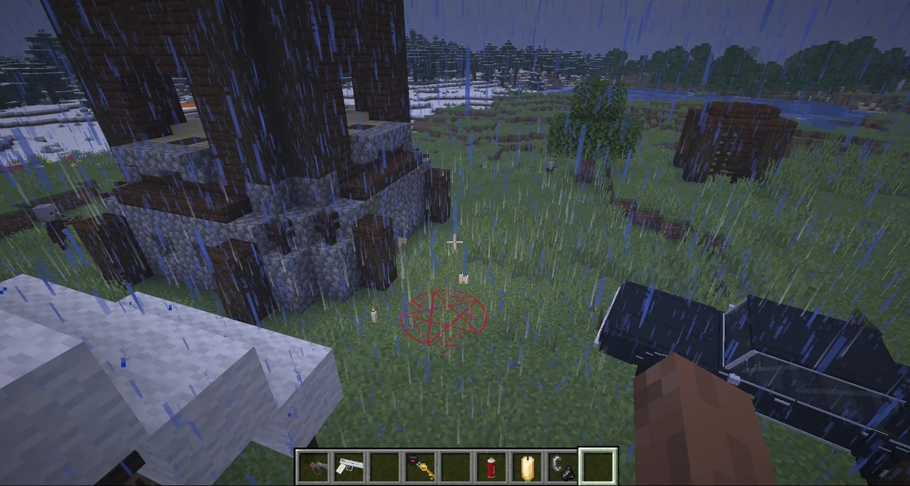

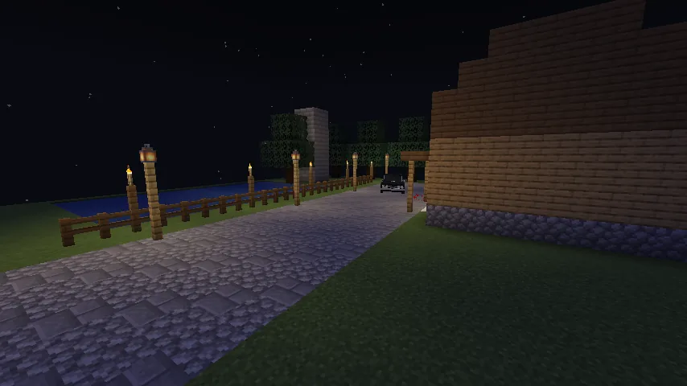


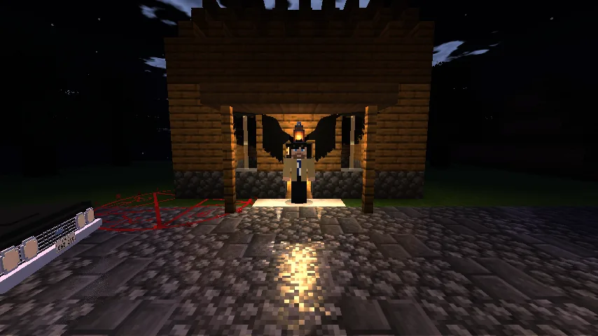
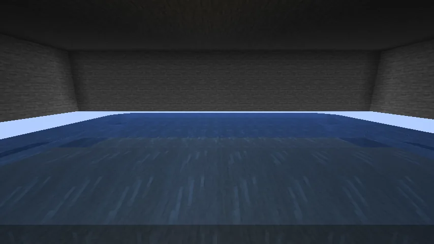

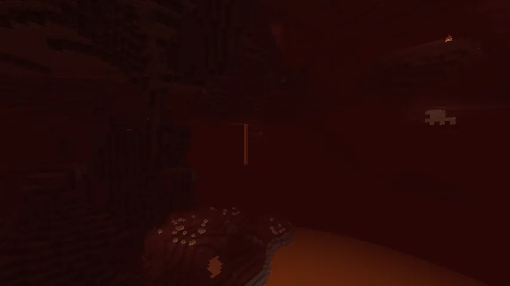
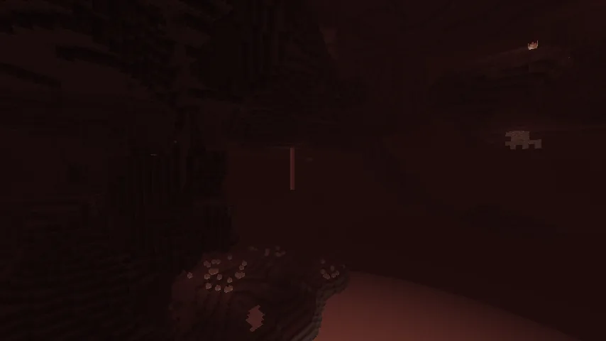
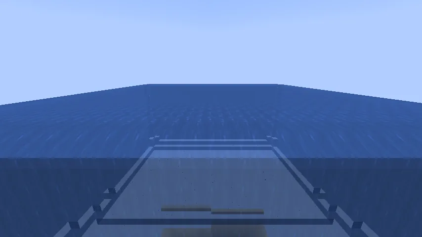
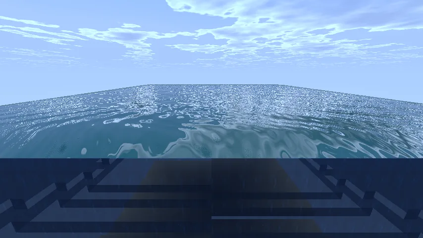
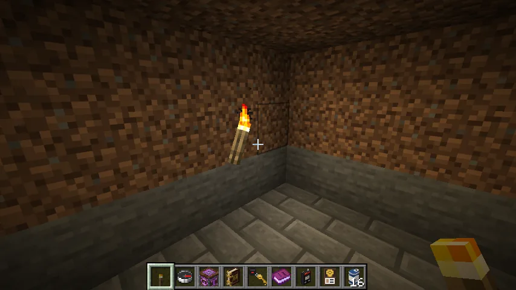
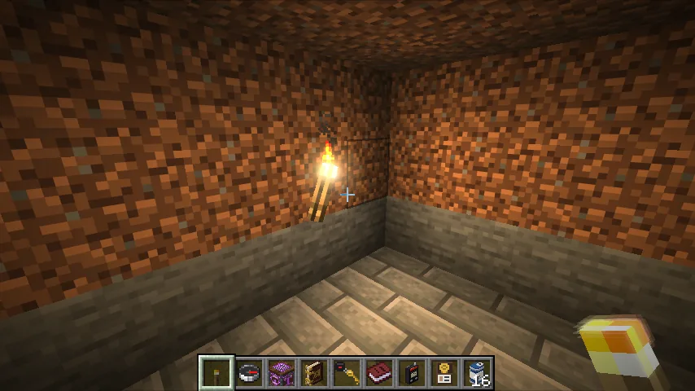
- Off
- Vanilla image with the mod's own effects. The shader engine does not run.
- Light
- Natural colour and exposure, light fog, lights, contact shadows.
- Balanced
- Sun and moon shadows, reflections on wet surfaces and water, volumetric light.
- Cinematic
- Balanced with a larger map and a longer reflection distance.
- 12firearms
- 66seals
- 20+rituals
- 3extra dimensions
- Each with its own model: from the Colt M1911A1 to the M4A1.
- They break by themselves; each one comes with a sign.
- Gates of Heaven and Hell, exorcism, wing-breaking, summoning Lucifer.
- Heaven, Hell and Purgatory.
Features
World: Lawrence, Kansas (1:1)
The world is not generated; it is baked from real data: elevation from USGS 3DEP, roads and buildings from OpenStreetMap. The minimap knows the roads and draws a real route found with A* on a 15,471-node road graph.
The hunter loop
You take jobs from Bobby. Collect evidence at the scene, write it in the journal, narrow the candidates, find the weakness. Evidence is spread far apart, so there is no one-click answer. Go with the wrong blade and you run.
Weapons and melee
Twelve firearms, five ammo types (Lead, Rock Salt, Silver, Iron, Dead Man's Blood), fire modes, recoil, barrel heat and four melee moves.
Spells, rituals, seals
Salt draws a closed circle; the line is fragile. The devil's trap is spray-painted on the ground step by step. Enochian seals live on your armour and survive death.
Wings
Open with F; they grow from the shoulder, align to the spine and cast a real shadow on the wall. Angel white, archangel black, Lucifer red.
Story
Lucifer asks; he does not force and does not lie. “No” is not free, “yes” cannot be undone. The Four Horsemen in their own towns, and a timer: if it runs out, Lucifer descends to Earth.
Gallery
Real screenshot


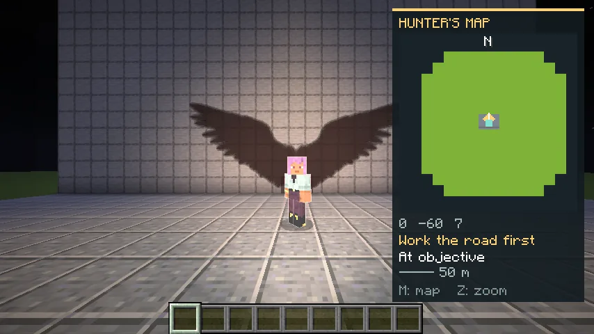

Real screenshot


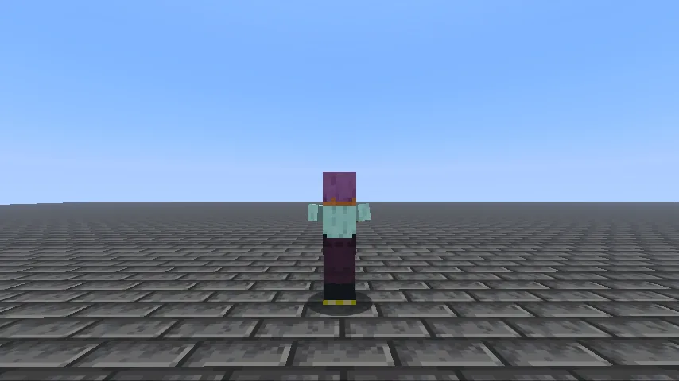
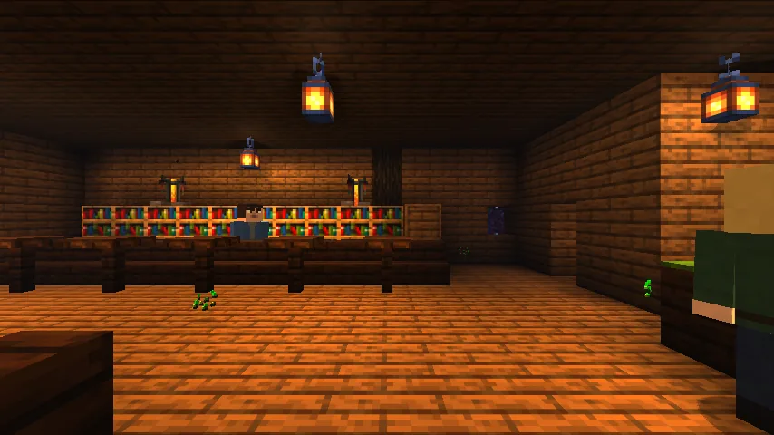
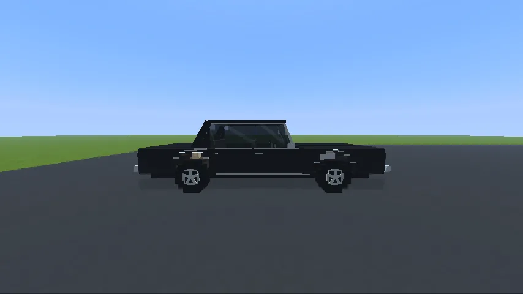


Real screenshot

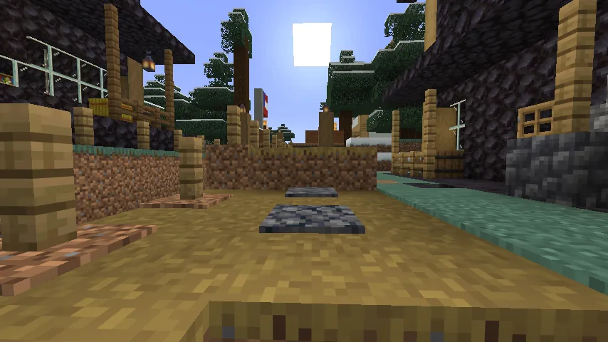
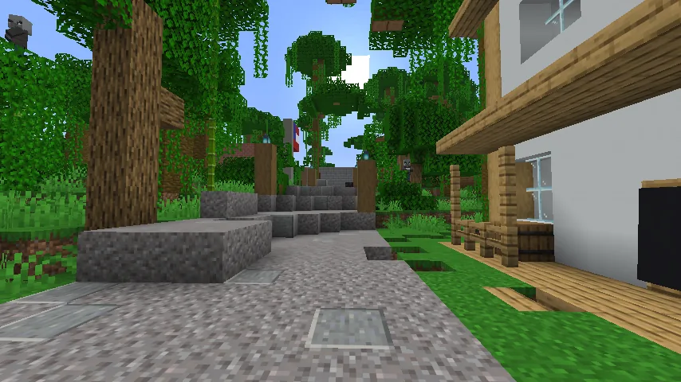


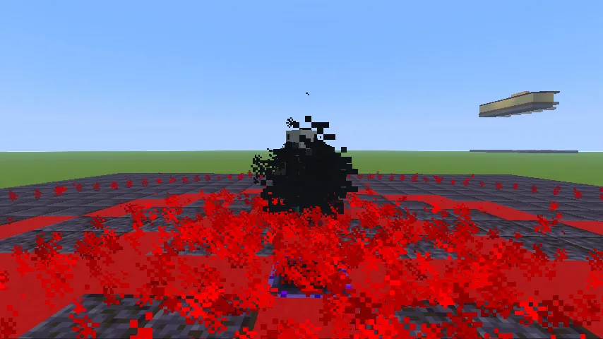
Real screenshot
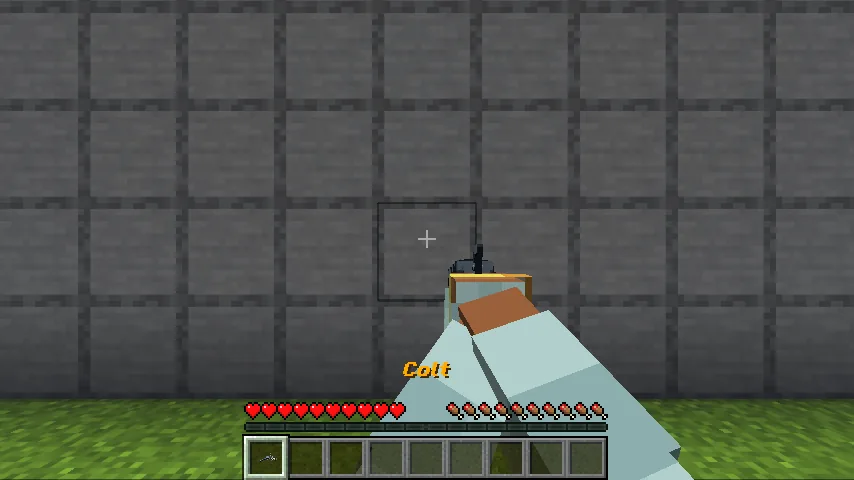
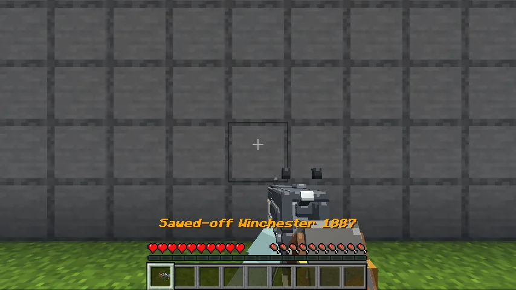
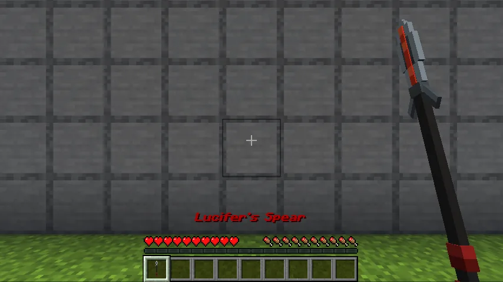
A real Kansas.
Kansas-caeleste is the mod's world map: Lawrence and the country west of it at 1 block = 1 metre, with 8th and Massachusetts at 0, 0. The map ships as release assets so the mod can download it on the world-creation screen.
- 22,774 buildings
- 423 towns
- 1,497 km of drivable road
- 15,471 road-graph nodes
- downtown
- 8th & Massachusetts and the blocks around it · ~12 MB
- lawrence
- The city and its suburbs · ~60 MB
- tam
- The full tile, out past Stull (24.6 × 9.2 km) · ~175 MB
- Type
- Minecraft mod
- Status
- Early Access 0.1
- Technology
- Minecraft 26.2 · Fabric · Java 25